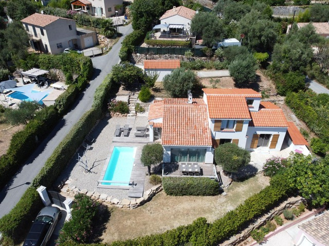
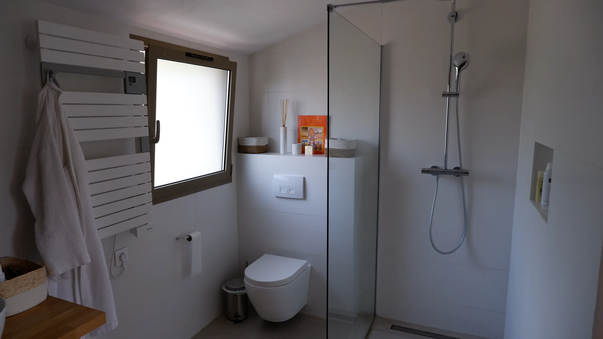
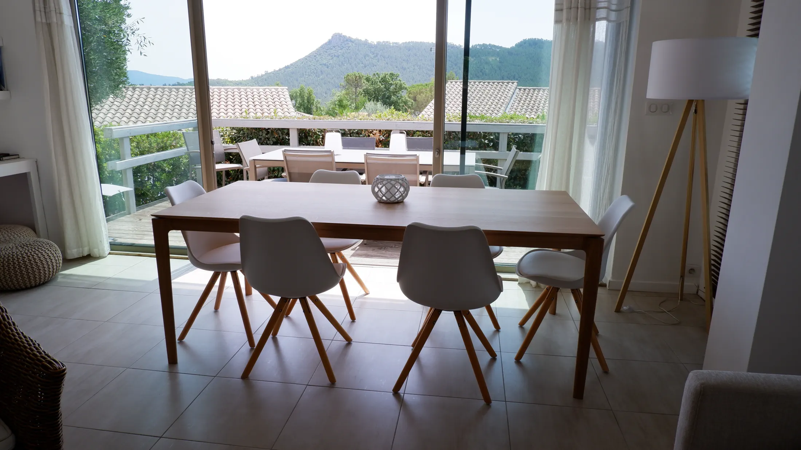
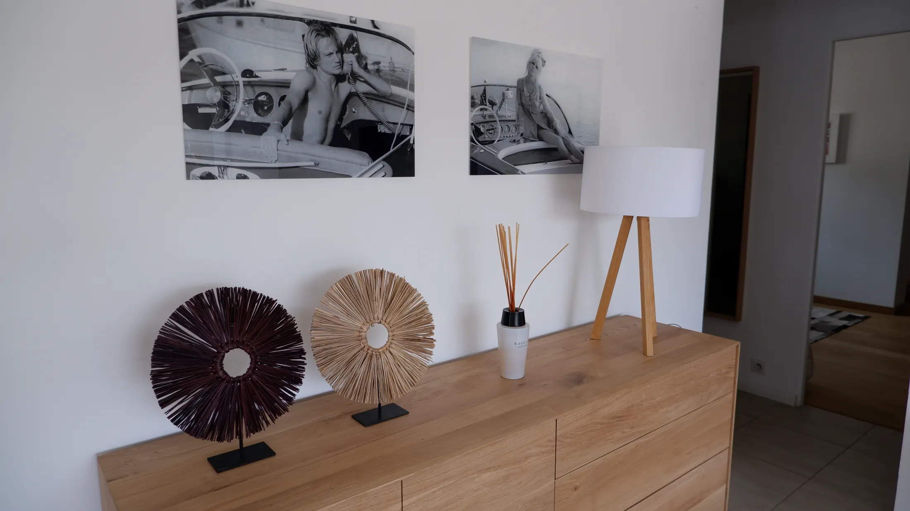

Chambre à l'étage
Lit double de 1,80 m, atmosphère calme et salle de bain attenante.
Charmante maison de vacances pour 6 personnes, avec piscine privée, à proximité du village et à environ 20 minutes de la mer.

6 personnes
3 chambres
3 lits doubles
3 salles de bain
Piscine privée
Wi-Fi
2 places de parking
1 km du village
Environ 20 min de la mer
Maison de vacances rénovée pour 6 personnes, à 1 km du village et à environ 20 minutes de la mer.
3 chambres, 3 salles de bain, piscine privée, Wi-Fi, télévision et 2 places de parking.
Sainte-Maxime, Cannes, Saint-Tropez, Nice et Fayence à proximité.


3 chambres, 3 salles de bains, un salon lumineux, une cuisine ouverte et un bureau.


Lit double de 1,80 m, atmosphère calme et salle de bain attenante.
Lit double de 1,60 m, accès jardin et salle de bain attenante.
Lit double de 1,60 m, accès jardin, douche italienne et toilette séparée.




Un espace lumineux et simple à vivre, avec table à manger, télévision, Wi-Fi et coin bureau.





Commerces et restaurants à proximité.
Sainte-Maxime, Cannes, Saint-Tropez, Nice et Fayence.
Pour toute demande d'information ou de disponibilité, vous pouvez nous écrire directement par e-mail ou nous appeler.
Nous serons ravis de vous renseigner sur la maison et votre séjour.